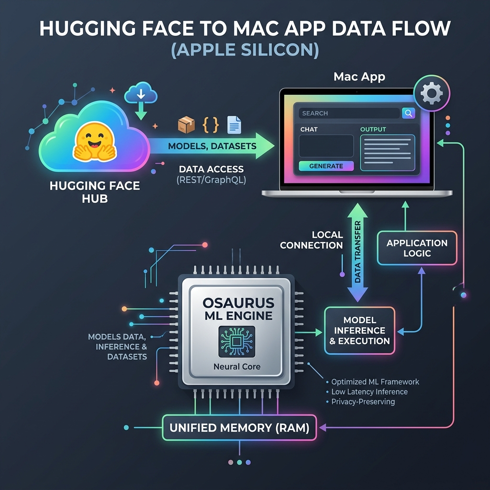
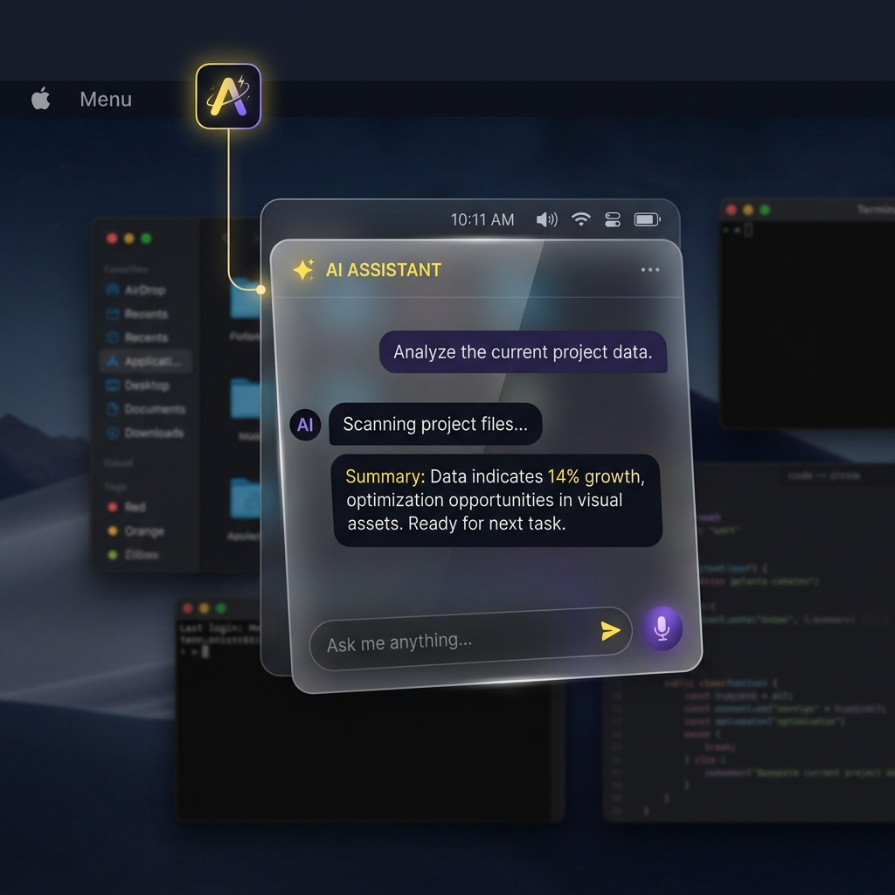

Engineered for On-Device Excellence
Real native macOS app performance with complete data sovereignty and instant accessibility.
Apple Silicon Native
Runs seamlessly on M1/M2/M3/M4 unified memory architectures via Osaurus engine for maximum throughput.
Live HF Hub Search
Instant model discovery across Hugging Face Hub repositories with model metadata, tags, and pull triggers.
Dual Window & Agent UI
Work from a full workspace window or summon the quick prompt agent anytime directly from your macOS Menu Bar.
MoE Optimizer Layer
Intent classification (Code, Math, Summary, Creative) that dynamically routes prompts to specialized local models with expert system prompts.
entheai Memory · Preview
A native port of entheai's memory-pp engine — keeps the past raw and recalls the most relevant spans across sessions. On-device, deterministic, zero network.
Voice · Preview
Talk to your local model — on-device dictation and spoken replies via Apple-native speech, forced on-device. The liquid-rust / kokoro engines slot in next.
Your Weights, Your Memory, Your Mac
`hf.app` acts as an honest interface layer. It never embeds bulky weights or runs heavy background telemetry. Everything heavy is executed on-device by Osaurus on localhost:1337.
- ✓ Full offline functionality once models are pulled
- ✓ macOS Keychain integration for Hugging Face tokens
- ✓ Sandboxed network client architecture
Data Flow & Architecture
Browse models on Hugging Face Hub → pull into Osaurus → chat locally using standard OpenAI-compatible `/v1` endpoints.
- ✓ MoEOptimizer.swift: Intent Classifier & Model Router
- ✓ Services.swift: HubClient & OsaurusClient APIs
- ✓ HFMacApp.swift: MainActor Observable AppState
- ✓ Views.swift: SwiftUI WindowGroup + MenuBarExtra

MoE Optimizer Layer
Zero-latency prompt intent classification directly inside the Swift app. Automatically detects code, math/reasoning, summarization, or creative prompts and routes them to specialized local models.
- ✓ Code Expert: Swift, Rust, Python, HTML formatting
- ✓ Reasoning & Math Expert: Step-by-step logic framing
- ✓ Summarization & Creative Experts: Domain system prompts
- ✓ Dynamic Model Router: Matches active Osaurus model capabilities
Menu Bar Agent Assistant
Need a fast code snippet, translation, or summary? Hit your menu bar icon anytime to open the quick prompt window without interrupting your workflow.
- ✓ Lightweight floating popover window
- ✓ Instant context switching
- ✓ Shared state with main window

Documentation & Setup Guide
Everything you need to run, build, and extend hf.app on your Mac.
Install in under a minute
1 · Get the app. Download the latest .dmg (v0.6.0), open it, and drag hf.app into Applications. It's Developer-ID signed & notarized, so it opens with no Gatekeeper warning — no xattr dance.
2 · Get the engine. Install Osaurus and start it on localhost:1337. hf.app is the thin front-end; Osaurus owns the weights, MLX, and serving.
3 · Pull & run. Pull a model in Osaurus (Llama, Qwen, Phi…), then hit Refresh in the Run tab of hf.app. Real tokens/sec, fully on-device — your HF token stays in the macOS Keychain.
Run from source (developers)
Needs the Xcode Command Line Tools. Builds with SwiftPM — no Xcode project required:
git clone https://github.com/8b-is/hf-mac.git
cd hf-mac
swift run
Swift codebase — Sources/HFMac/
Eight single-responsibility files, ~1,200 lines total. hf.app drives Osaurus for inference and embeds live Spaces — it never bundles weights or a model runtime. Read by layer:
@main App — WindowGroup + MenuBarExtra, holding the @Observable AppState the whole UI reads.
186 loc
memory-pp: keep the past raw, recall relevant spans by lexical overlap (the NativeMesh scorer). On-device, deterministic.
101 loc
Speech/AVFoundation, forced on-device. The liquid-rust/kokoro sidecars slot in behind this.
97 loc
HubClient (HF Hub REST — model & Space search) and OsaurusClient (OpenAI /v1 chat + model pull), with the HubModel / HFSpace types.
291 loc
SpaceWebView — embeds a live Hugging Face Space (*.hf.space) so quantum games, Gradio, and static apps run on the desktop; caches visited assets.
40 loc
Mixture of Experts (MoE) Intent Classifier & Router
The MoEOptimizer module (Sources/HFMac/MoEOptimizer.swift) performs on-device intent classification before sending prompts to your local Osaurus server. It evaluates user input across five domain experts:
- ⚡ Code Expert: Injects software engineering system prompts and routes to
coder/qwenmodels. - 📐 Reasoning & Math Expert: Formats step-by-step reasoning instructions and routes to
reasoning/r1models. - 📝 Summarization Expert: Formats actionable bullet-point extraction instructions.
- 🎨 Creative Writing Expert: Enhances creative storytelling and drafting prompts.
- 🧠 General Expert: High-throughput, concise general responses.
How it Works
let route = MoEOptimizer.optimize(
prompt: text,
chatHistory: chat,
availableModels: osaurusModels
)
// route.domain → classified ExpertDomain
// route.recommendedModelID → auto-routed Osaurus model
// route.formattedMessages → messages with expert system framing
Keychain & Entitlements Security
The app holds two secrets — your Hugging Face token and the optional Osaurus key — in the system Keychain via macOS Security.framework (kSecClassGenericPassword, service hf.app). Never written to disk in the clear. Full policy: SECURITY.md.
<?xml version="1.0" encoding="UTF-8"?>
<!DOCTYPE plist PUBLIC "-//Apple//DTD PLIST 1.0//EN" "http://www.apple.com/DTDs/PropertyList-1.0.dtd">
<plist version="1.0">
<dict>
<key>com.apple.security.app-sandbox</key>
<true/>
<key>com.apple.security.network.client</key>
<true/>
</dict>
</plist>
Build & run in Xcode
The Xcode project is generated from project.yml (XcodeGen) over the same Sources/HFMac — the .xcodeproj is git-ignored, so project.yml is the source of truth. Generate it, then open:
brew install xcodegen # once
xcodegen generate # writes HFMac.xcodeproj
open HFMac.xcodeproj # ⌘R to run · Product ▸ Archive to package
Press ⌘R to run, or Product ▸ Archive for a release build. The shared HFMac scheme is what both Xcode and Xcode Cloud use. Signing is automatic (Team 7CFQYBX575); for an unsigned local build add CODE_SIGNING_ALLOWED=NO to an xcodebuild invocation.
Ship it — notarized DMG & the Mac App Store
Two tracks, one codebase. Full runbook: APP_STORE.md · PUBLISHING.md.
① Developer-ID DMG (OSS / direct download). Push a v* tag and GitHub Actions builds → Developer-ID signs → notarizes + staples → cuts a Release. Runs on Blacksmith Apple-Silicon runners.
git tag v0.6.0
git push --tags # → notarized .dmg on Releases
② Mac App Store / TestFlight via Xcode Cloud with Apple-managed signing — no manual certs. The app record is live: hf.app, Apple ID 6794829098. Open the generated project, choose Product ▸ Xcode Cloud, pick the HFMac scheme, and archive → TestFlight. The ci_scripts/ hooks regenerate the project and stamp the build number automatically.